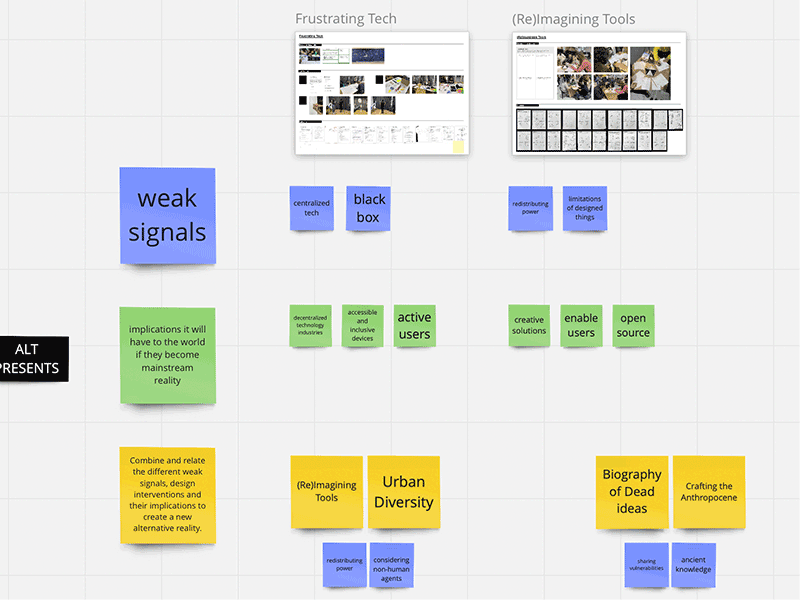
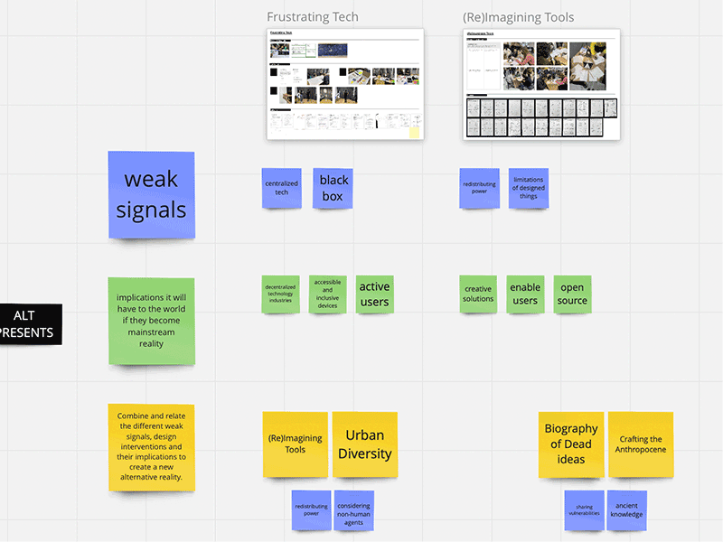

🗓 19 April 2022 / Design Studio
🗓 02 May 2022 / Design Studio
In thinking of my alternative presents, I started by gathering the interventions from each of the three terms and analyzing their weak signals and potential impacts. Here are the list of interventions by terms below:
Term1: Re-pair Party Inspired by repair parties, where people bring in their broken devices to repair back to their original condition and function, the “re-pair party” looks at pairing a device with the owner/user’s identity and needs.
(Re)Imagining Tools Examining our relationship to tools and how our behaviors are shaped by them. In this participatory exercise, I ask participants to imagine alternate (radical) scenarios and purposes for the tools they use on an every day basis.
Term2: Urban Diversity Co-Design Exploring the co-dependence of humans and non-human agents within the urban space, and why diversity is crucial in building better living spaces for all. Using imagination and embodied hands-on design methods with children and parents to generate empathy and empower co-creation.
Biography of Dead Ideas Collecting process objects that embody failures and vulnerabilities from our classmates during MDEF term2, we find emerging connections and possibilities through activating their collective stories.
Term3: Memories of Vanishing A memorial for insects that are becoming extinct due to our current climate crisis and abuse of natural resources. Zooming in to the micro scale, we invite the audience to reflect on the ripple effects of our human actions and the impact they have on our planet. Listen to the sounds that will no longer be heard with future generations.
Crafting the Anthropocene Inspired by local heritage and traditional craft and the transformation of our cultures in the past century with the trends of industrialization and digitalization. Pairing it up with a current weak signal or local crisis in that region to speculate on the possible tools and extreme scenarios around the rituals of food.
Once I catalogued the interventions, I listed the weak signals I was addressing in each intervention and their possible implications if they were to become reality. Some of the common weak signals were centralization of technology and design and the human impact on nature. It was challenging to envision a real-world implication for most of these interventions because they have not had the time to go beyond an exploratory phase. Regardless, some of the common implications were in creating accessible and open designs and spaces, diversifying spaces and perspectives, and engaging and empowering citizens. Finally looking at a few possibilities elements of some of the interventions were combined.

See the mapping here.
🗓 17 May 2022 / Design Studio
With this in mind, I visualized the socio-technical system of my project. First, I conducted some research on the topic, I learned “A socio-technical system (STS) is one that considers requirements spanning hardware, software, personal, and community aspects. It applies an understanding of the social structures, roles and rights (the social sciences) to inform the design of systems that involve communities of people and technology.” (Interaction Design Foundation). I also found some examples and visualizations online and used one as a reference for building my personal system.
I mapped out the people, culture, goals, technology, infrastructure, and processes which would be involved in my project. The project I chose to focus on is a platform for sharing and understanding diverse heritage and craft and exploring its applications for today and our future. Because I am still working out the details of this concept, creating this map was a good exercise to understand the different components and agents that could inform the direction. But I wasn’t able to complete this system as well as I hoped for.
In terms of scalability, I’m very open to the idea of distributing ownership of the project as a whole, as long as the values continue to align. Continuing as a mission-based effort, regardless of the growth, can help in making decisions for scaling and other changes that any organization will have to face. My goal is to create a framework and system in which these value-based activities can happen and evolve. Some of the open distribution methods I envision are through workshops, kits, interviews, podcasts, and other ways to distribute the knowledge and practices to individuals and communities.

See the diagrams here.
Final Intervention
See final intervention: Memories of Vanishing🗓 02 May 2022 / Design Studio
Alternative Presents
“Alternative presents give designers the key to opening escape routes to the present continuities, offering space to radically imagine discontinuities that would offer different outcomes in favor of more optimistic future scenarios than the ones we are being presented as the most plausible results of our current business as usual practices” — Alternative Presents PresentationIn thinking of my alternative presents, I started by gathering the interventions from each of the three terms and analyzing their weak signals and potential impacts. Here are the list of interventions by terms below:
Term1: Re-pair Party Inspired by repair parties, where people bring in their broken devices to repair back to their original condition and function, the “re-pair party” looks at pairing a device with the owner/user’s identity and needs.
(Re)Imagining Tools Examining our relationship to tools and how our behaviors are shaped by them. In this participatory exercise, I ask participants to imagine alternate (radical) scenarios and purposes for the tools they use on an every day basis.
Term2: Urban Diversity Co-Design Exploring the co-dependence of humans and non-human agents within the urban space, and why diversity is crucial in building better living spaces for all. Using imagination and embodied hands-on design methods with children and parents to generate empathy and empower co-creation.
Biography of Dead Ideas Collecting process objects that embody failures and vulnerabilities from our classmates during MDEF term2, we find emerging connections and possibilities through activating their collective stories.
Term3: Memories of Vanishing A memorial for insects that are becoming extinct due to our current climate crisis and abuse of natural resources. Zooming in to the micro scale, we invite the audience to reflect on the ripple effects of our human actions and the impact they have on our planet. Listen to the sounds that will no longer be heard with future generations.
Crafting the Anthropocene Inspired by local heritage and traditional craft and the transformation of our cultures in the past century with the trends of industrialization and digitalization. Pairing it up with a current weak signal or local crisis in that region to speculate on the possible tools and extreme scenarios around the rituals of food.
Once I catalogued the interventions, I listed the weak signals I was addressing in each intervention and their possible implications if they were to become reality. Some of the common weak signals were centralization of technology and design and the human impact on nature. It was challenging to envision a real-world implication for most of these interventions because they have not had the time to go beyond an exploratory phase. Regardless, some of the common implications were in creating accessible and open designs and spaces, diversifying spaces and perspectives, and engaging and empowering citizens. Finally looking at a few possibilities elements of some of the interventions were combined.

See the mapping here.
🗓 17 May 2022 / Design Studio
Designing Yourself Out
In thinking about the growth and expansion of my projects, I can envision a few different approaches to growth and how I can be designed out of the equation. As I understand, designing myself out is not to restrict my involvement in the project, but rather a strategy to sustain the activities and impacts of the project in a more decentralized manner an to enable an extension of capacity of the efforts.With this in mind, I visualized the socio-technical system of my project. First, I conducted some research on the topic, I learned “A socio-technical system (STS) is one that considers requirements spanning hardware, software, personal, and community aspects. It applies an understanding of the social structures, roles and rights (the social sciences) to inform the design of systems that involve communities of people and technology.” (Interaction Design Foundation). I also found some examples and visualizations online and used one as a reference for building my personal system.
I mapped out the people, culture, goals, technology, infrastructure, and processes which would be involved in my project. The project I chose to focus on is a platform for sharing and understanding diverse heritage and craft and exploring its applications for today and our future. Because I am still working out the details of this concept, creating this map was a good exercise to understand the different components and agents that could inform the direction. But I wasn’t able to complete this system as well as I hoped for.
In terms of scalability, I’m very open to the idea of distributing ownership of the project as a whole, as long as the values continue to align. Continuing as a mission-based effort, regardless of the growth, can help in making decisions for scaling and other changes that any organization will have to face. My goal is to create a framework and system in which these value-based activities can happen and evolve. Some of the open distribution methods I envision are through workshops, kits, interviews, podcasts, and other ways to distribute the knowledge and practices to individuals and communities.
See the diagrams here.